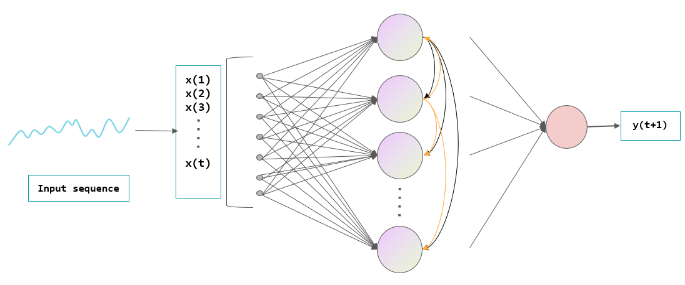
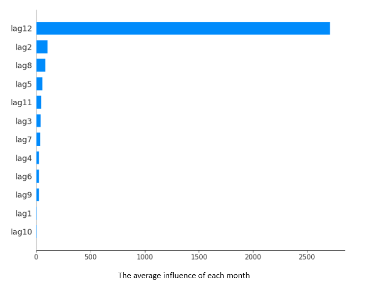

📖Tutorial
🔷 What is time series forecasting?
Time series forecasting is the use of a model to predict future values based on previously observed values. We use the clothing sales data in blue dots as an example.
- Glass-box Model: Glass-box models afford human comprehensibility through logical expressions (e.g. rules, decision trees, linear regression, etc). In the example below, a linear model uses a linear function, represented by a red dashed line, to model the relationship between time points and output values, thus explaining how it comes up with its predictions.
- Black-box Model: In black-box models, the relationship between inputs and outputs is obfuscated and often not easily intelligible to humans. 
🔷 What are the explanation methods of time series forecasting models?
Explainable AI (XAI) refers to developing models that not only solve problems, but also present their decision-making process in a way that it is interpretable by humans. In this study, we introduce the following explanation approaches.
- Global explanation: For the time series data we use, there is a 12-month cycle. The global explanation is the average influence of each month across the entire time series data on the forecasting results. 
- Local explanation: Local explanation reveals how the forecast result at each time point is affected by the previous 12 values. In this example, the input sequence is from July 2023 to June 2024, and the sales value corresponding to the month of July 2024 is to be predicted.
Explanation: Overall, the sales value of the same month last year played an important role in forecasting the sales value of the current month.
Explanation: For the sales value of July 2024, the sales value of July 2023 had a positive effect. Conversely, the sales from the previous two months had a slight negative impact.